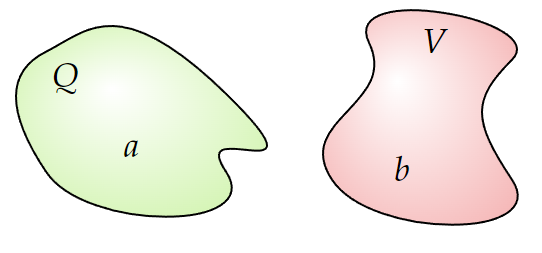

(a) Suppose a charge distribution $\rho _1 (\mathbf{r}) $ produces a potential $V_1 (\mathbf{r}) $, and some other charge distribution $\rho _2 (\mathbf{r}) $ produces a potential $V_2 (\mathbf{r}) $.
(The two situations may have nothing in common, for all I care - perhaps number 1 is a uniformly charged sphere and number 2 is a parallel-plate capacitor. Please understand that $\rho _1 $ and $\rho _2 $ are not present at the same time, we are talking about two different problems, on in which only $\rho _1 $ is present, and another in which only $r\rho _2 $ is present).
Prove Green's reciprocity theorem (ref28):
\[\int _{\text{all space} } \rho _1V_2 d\tau =\int _{\text{all space} }\rho _2V_1d\tau \tag{3.107}\]Hint: Evaluate $\int \mathbf{E}_1 \cdot \mathbf{E}_2 d\tau $ two ways, first writing $\mathbf{E}_1 =-\nabla V_1 $ and using integration by parts to transfer the derivative to $\mathbf{E}_2 $, then writing $\mathbf{E}_2 =-\nabla V_2 $ and transferring the derivative to $\mathbf{E}_1 $.
(b) Suppose now that you have two separated conductors (Fig. 3.41).
If you charge up conductor $a $ by amount $Q $ (leaving $b $ uncharged), the resulting potential on $b $ is, say, $V_{ab} $. On the other hand, if you put that same charge $Q $ on conductor $b $ (leaving $a $ uncharged), the potential of $a $ would be $V_{ba} $.
Use Green's reciprocity theorem to show that $V_{ab}=V_{ba} $ (an astonishing result, since we assumed nothing about the shapes or placement of the conductors).
Consider
\[\int \mathbf{E}_1\cdot \mathbf{E}_2d\tau \]Recall that for the $\mathbf{E} $ field, we have:
\[\mathbf{E}=-\nabla V \]Further, from integral calculus, recall:
\[\nabla \cdot (f\mathbf{A})=f(\nabla \cdot \mathbf{A})+\mathbf{A}\cdot (\nabla f) \]So if we write:
\[\int \mathbf{E}_1\cdot \mathbf{E}_2d\tau =\int -\nabla V_1 \cdot \mathbf{E}_2 d\tau \]The integrand turns into
\[-\mathbf{E}_2 \cdot (\nabla V_1 )=V_1 (\nabla \cdot \mathbf{E}_2 )-\nabla \cdot (V_1 \mathbf{E}_2) \]But we also have that $\nabla \cdot \mathbf{E}=\rho /\epsilon _0 $. Combining all these results:
\[\int \mathbf{E}_1\cdot \mathbf{E}_2d\tau =\int V_1 \frac{\rho _2 }{\epsilon _0 }-\nabla \cdot (V_1 \mathbf{E}_2) d\tau \]The 2nd term in the integral will vanish (use divergence theorem. The potential vanishes as it expands). We conclude that
\[\int \mathbf{E}_1\cdot \mathbf{E}_2d\tau =\frac{1}{\epsilon _0 }\int V_1 \rho _2 d\tau \]If we do the exact same procedure but writing $\mathbf{E}_2 $ as a gradient of the potential instead of $\mathbf{E}_1 $, we find:
\[\int \mathbf{E}_1\cdot \mathbf{E}_2d\tau =\frac{1}{\epsilon _0 }\int V_2 \rho _1 d\tau \]Thus:
\[\int _{\text{all space} } \rho _1V_2 d\tau =\int _{\text{all space} }\rho _2V_1d\tau \tag{As seen on Eq. 3.107}\]We have:
\begin{align*} \int V_1 \rho _2 d\tau &= \int _b V_{ab}\rho _2 d\tau \\ &= V_{ab}Q \end{align*}And:
\begin{align*} \int V_2 \rho _1 d\tau &= \int _b V_{ba}\rho _1 d\tau \\ &= V_{ba}Q \end{align*}So
\[V_{ab}Q=V_{ba}Q \]Meaning
\[ V_{ab}=V_{ba}\]